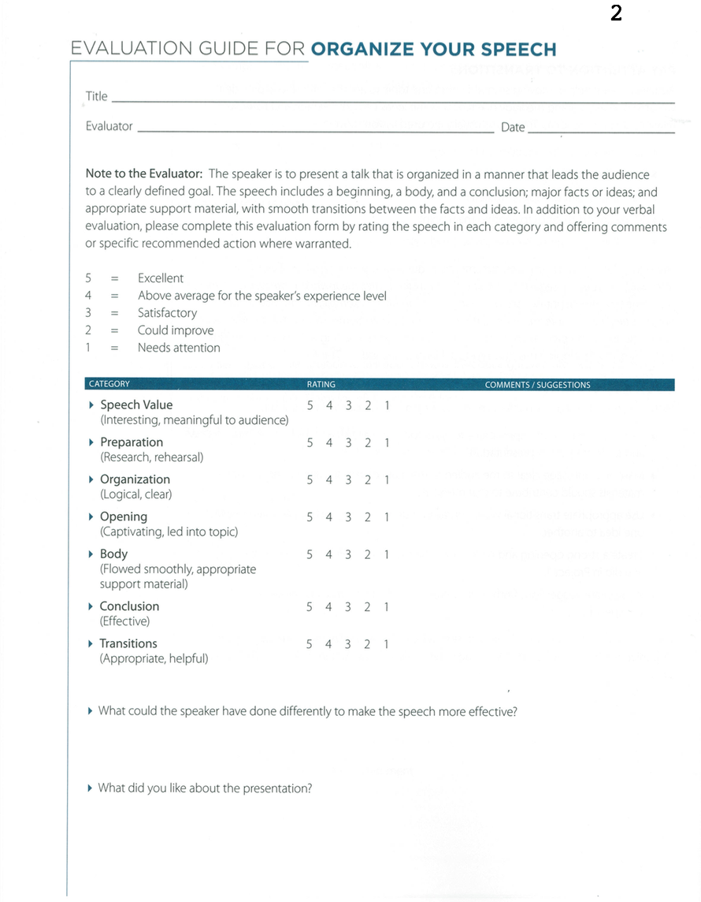

<!-- Main -->
	<div id="main" class="wrapper style1">
		<div class="container">
			<section>
				<div class="10u -1u">
					<header class="major">
						<!-- <h2>Blog</h2> -->
						<!-- <span class="byline">Integer sit amet pede vel arcu aliquet pretium</span> -->
					</header>
					<h2>What is this speech about ?</h2>
					<ul>
						<li>Good speech organization is essential if your audience is to follow and understand your presentation. </li>
					<li>	You must take the time to put your ideas together in an orderly manner. </li>
					<li>	You can organize your speech in several different ways; choose the outline that best suits your topic. </li>
					<li>	The opening should catch the audience’s attention, the body must support the idea you want to convey, and the conclusion should reinforce your ideas and be memorable.</li>
						<li> Transitions between thoughts should be smooth.</li>
</ul><br>
<h2>Objectives</h2>
<ul>

<li>Select and appropriate outline which allows listeners to easily follow and understand your speech.</li>
	 <li>Make your message clear, with supporting material directly contributing to that message.</li>
	 <li>Use appropriate transitions when moving from one idea to another.</li>
	 <li>Create a strong opening and conclusion.</li>
	 <li>Time: Five to seven minutes.</li>
</ul><br>
<h2>Evaluation</h2>
Download: <a href="Evaluation2.pdf"></a>
	<br>

	<h2>Videos</h2>
	<p align="center">
		<iframe height="500"
		src="https://www.youtube.com/embed/C1yaxbsbxgU">
		</iframe>
			<iframe height="500"
			src="https://www.youtube.com/embed/d1u7THOudfw">
			</iframe>
	</p>
	<h2>More Resources</h2>
		<li><a href="Organize-your-speech.pdf">Resource from Toastmasters Website</a></li>
		<li>  <a href="http://sixminutes.dlugan.com/speech-topics/">Guide to Successful Speech Topics</a></li>
		<li><a href="http://sixminutes.dlugan.com/toastmasters-speech-2-organize-your-speech/">An unofficial guide to Speech 2</a></li>


				</div>
			</section>
		</div>
	</div>
